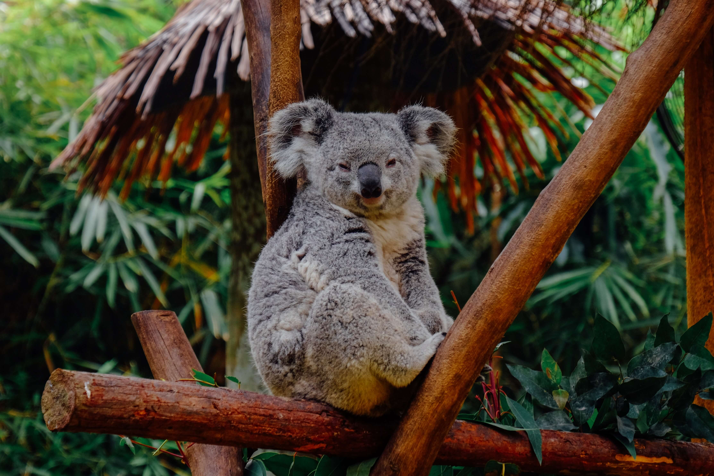

После того как малыш вылезет из сумки, он катается на спине или животе матери, однако время от времени возвращается обратно в сумку, где дополнительно продолжает питаться молоком. Этот период в его жизни длится до тех пор, пока он не станет слишком большим и не сможет поместиться в сумке. Покидают детеныши свою маму в возрасте от 1 до 3 лет, в зависимости от того, когда у нее появится новый малыш.
Они практически не пьют воду, так как получают ее в достаточном количестве из листьев эвкалипта. Тем не менее, они все же могут спускаться к водоемам, для того чтобы напиться. Случается это редко, в особо засушливые сезоны.

Как и множество других животных, коалы столкнулись с негативными последствиями деятельности человека. Благодаря людям они потеряли до 80% своей естественной среды обитания. Несмотря на то, что они защищены законом Австралии и не включены в список МСОП как находящиеся под угрозой исчезновения, их популяция все равно постепенно сокращается. Ученые полагают, что сейчас осталось около 40-80 тысяч коал и эта цифра постоянно падает.
Они до ужаса ленивые животные. Так как для переваривания эвкалипта им нужно очень много времени, они спят около 18-20 часов в день. То есть активность коала проявляет лишь на протяжении 6-4 часов в сутки. При этом чаще всего они бодрствуют ночью.
Интересные факты
северо-восточный, центральный и юго-восточный Квинсленд